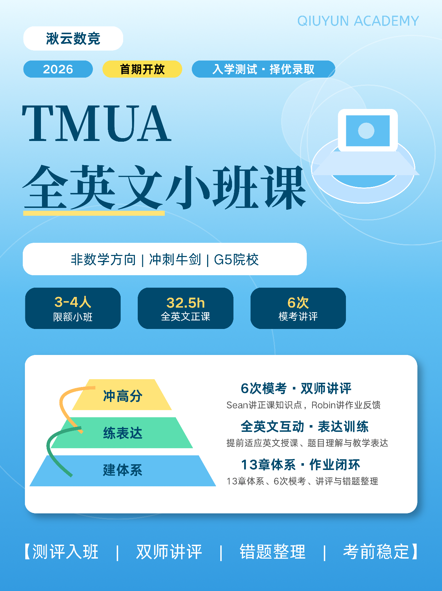
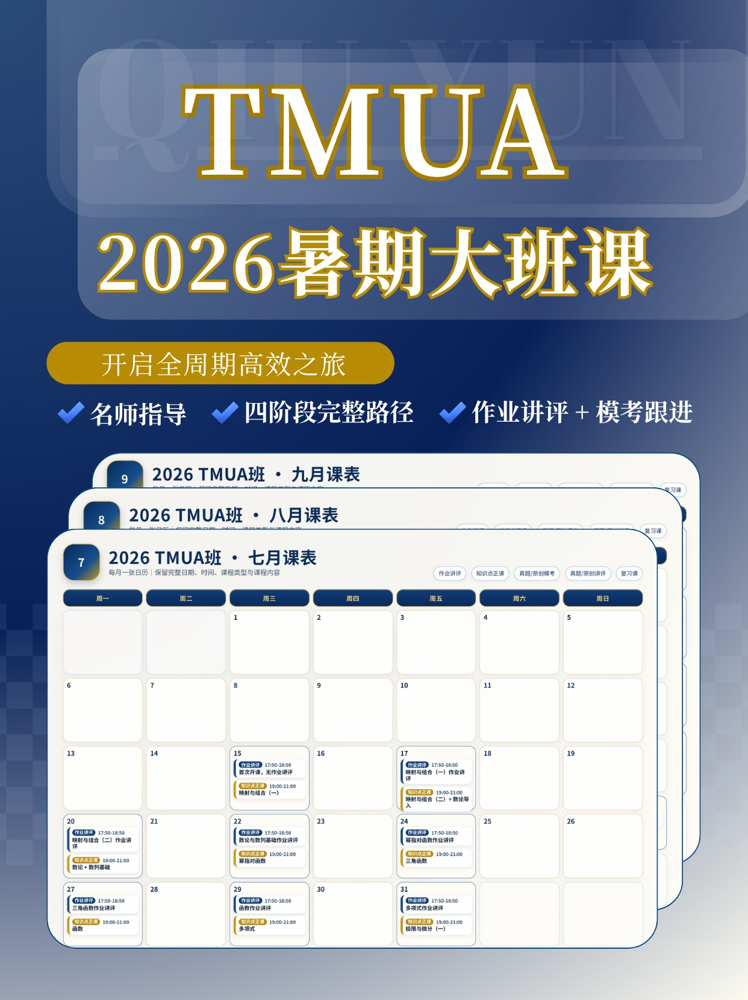
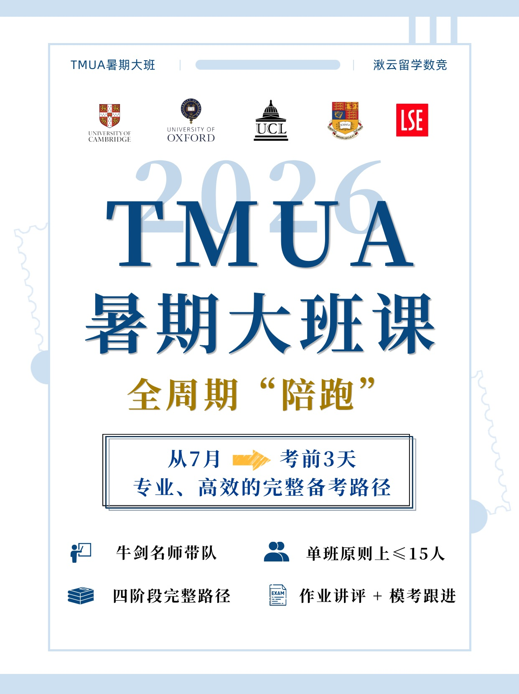
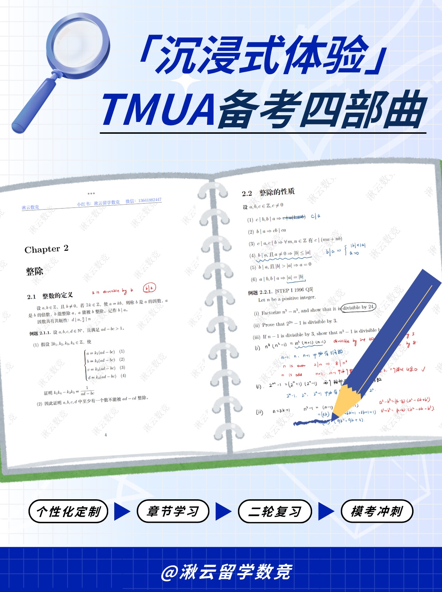
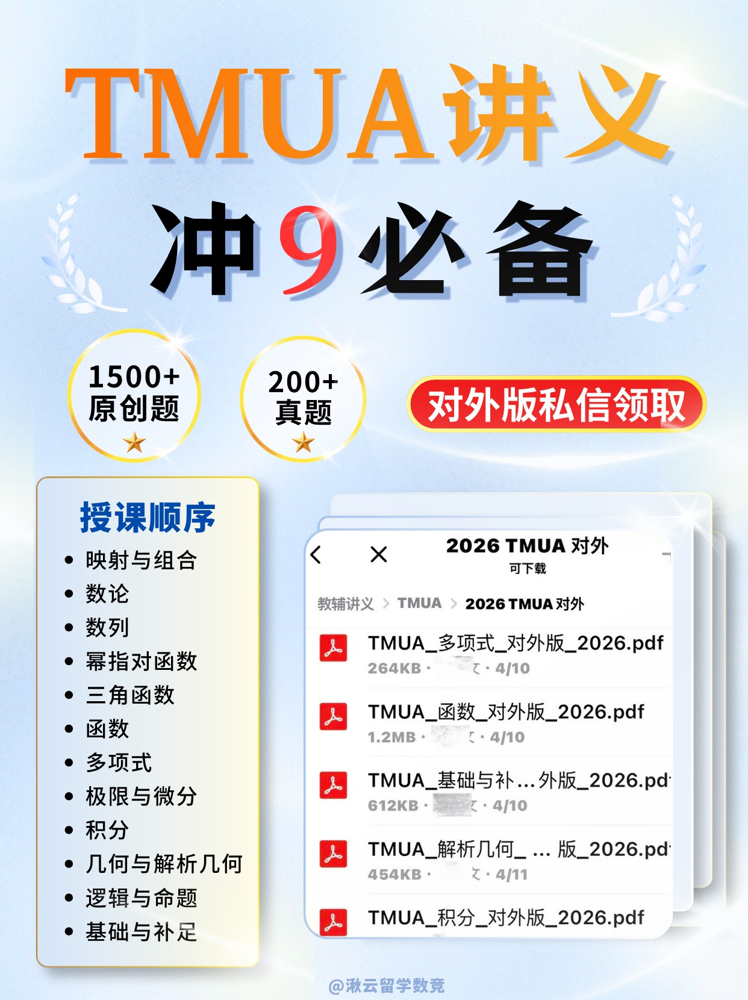
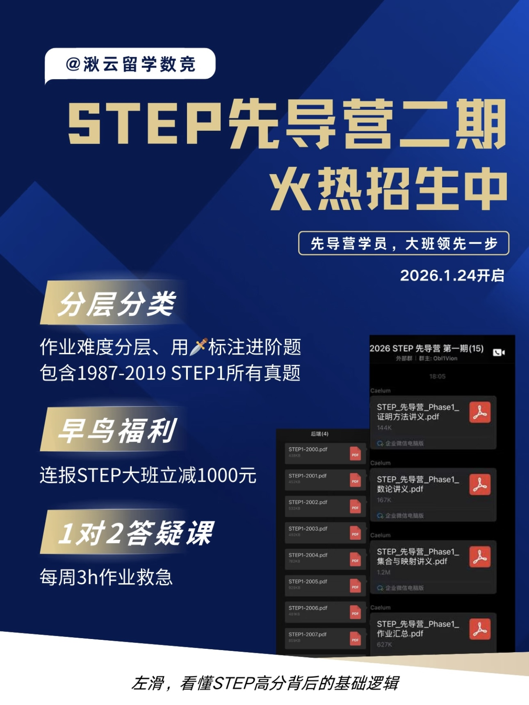
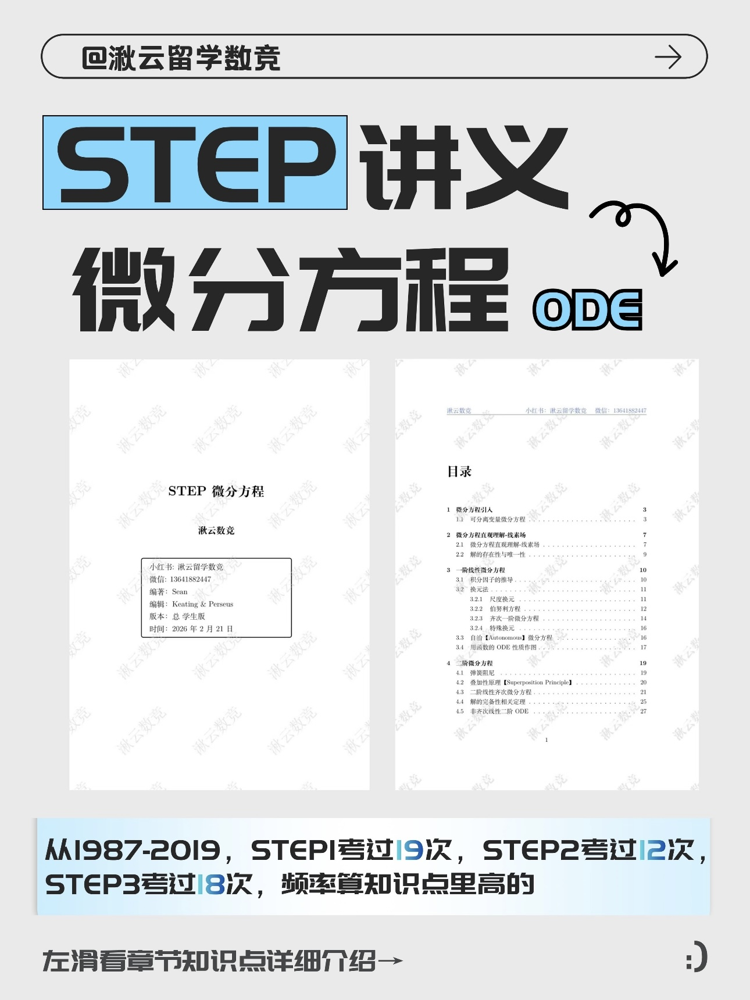

业务系统
计划、内容、任务、用户触点与复盘。







FRONTEND CONTENT WORKSPACE
让策划、创作、发布、用户触点与复盘在同一工作台连续发生。
WHY WE EXIST
前端负责从“看见内容”到“产生咨询兴趣并完成有效交接”的过程；最终销售成交仍由销售侧承接。
SIX STAGES · ONE WORKFLOW
从策划到复盘，每个环节承接上一步的判断，也为下一轮内容积累依据。
整理目标、热点、用户问题与历史反馈，确定优先级。
完成选题、结构、文案与阅读节奏。
完成封面、正文排版与视觉表达。
完成审核、发布、自然与推广流量管理。
处理评论与私信，整理来源和有效用户信息。
将数据与用户反馈转化为下一轮内容调整。
结果不是终点，它会沿着轨道回到下一次策划。
SYSTEM ENTRANCES
首页负责说明方向。具体工作、人员与敏感管理内容，进入各自边界。
计划、内容、任务、用户触点与复盘。
岗位、能力、SOP 与成长路径。
评价、激励与需要授权查看的内容。